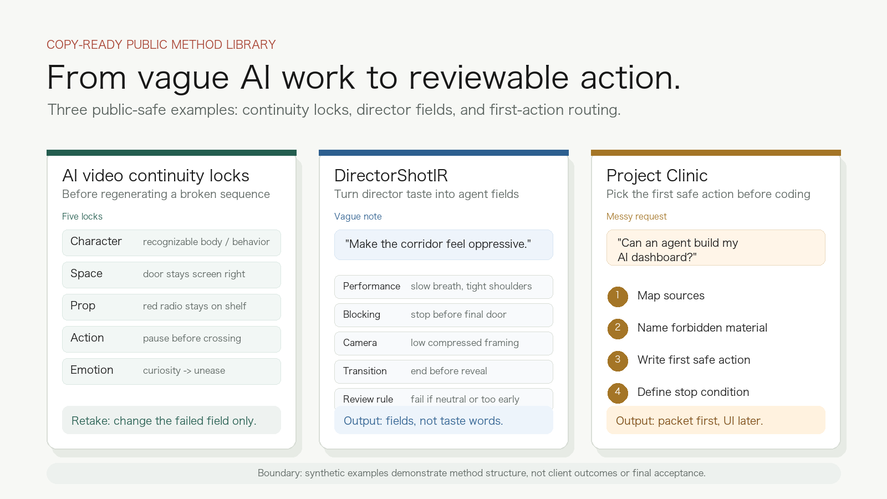
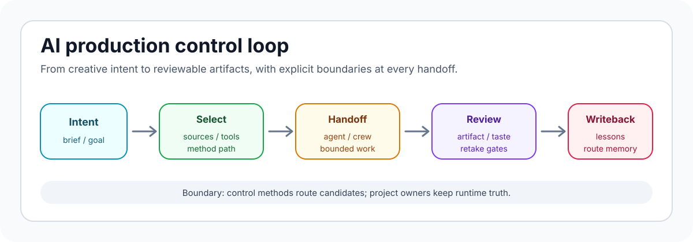

Five continuity locks
Character, space, prop, action, and emotion locks for AI video retake decisions.
Public method preview cards for AI video continuity locks, DirectorShotIR, and Project Clinic routing.

Public method library
Four public-safe case tracks and six copy-ready templates for AI video continuity, DirectorShotIR, Project Clinic, workflow rescue, and video admission.
我把导演判断、影像生产、AI coding agent 和产物验收接成一条可审查的控制链。
Control loop

Public method library
Character, space, prop, action, and emotion locks for AI video retake decisions.
Performance, blocking, camera, transition, asset roles, review rule, retake target.
Intent, source, capability route, first safe action, review checklist, writeback.
Raw artifact, static evidence, playback, relation checks, owner seal.
Case tracks
The public cases explain structure, control decisions, and review boundaries. They do not publish private scripts, raw media, provider state, customer material, or final acceptance truth.
Copy-ready starting points
GitHub proof appendix
Public discovery loop
The useful part is the public control language: AI video continuity, DirectorShotIR, Project Clinic, workflow rescue, and video admission.